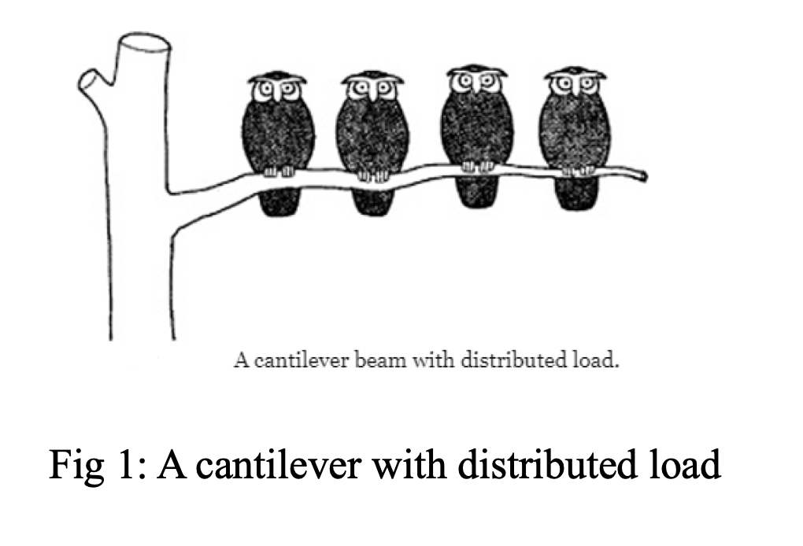

This project concerns the research and implementations of Young’s modulus of elasticity, relationships between curvature, rotation

Young’s modulus of elasticity plays an important role in engineering and material. It is a characteristic of the material which is not dependent on the stress or on the relative deformation.

Different materials in our life have different figures. When I visiting the forbidden city, I find a strange thing that all of the wooden buildings are very low, there is almost none of them reached the second floor. However, the modern ferro concrete made skyscrapers row upon row of. And, if too many people stands on a wooden bridge, it will be tremble in the balance. But that would not happened in iron bridges.
I was seized with a strong desire to find out the weight capacity and deformation under different force. By searching some references and reports in the internet, the elastic beam seemed most feasible.